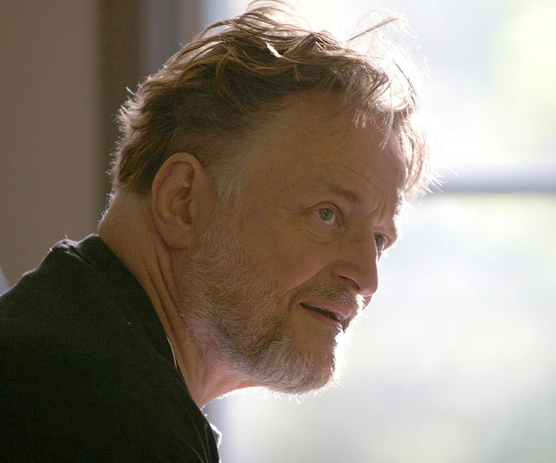
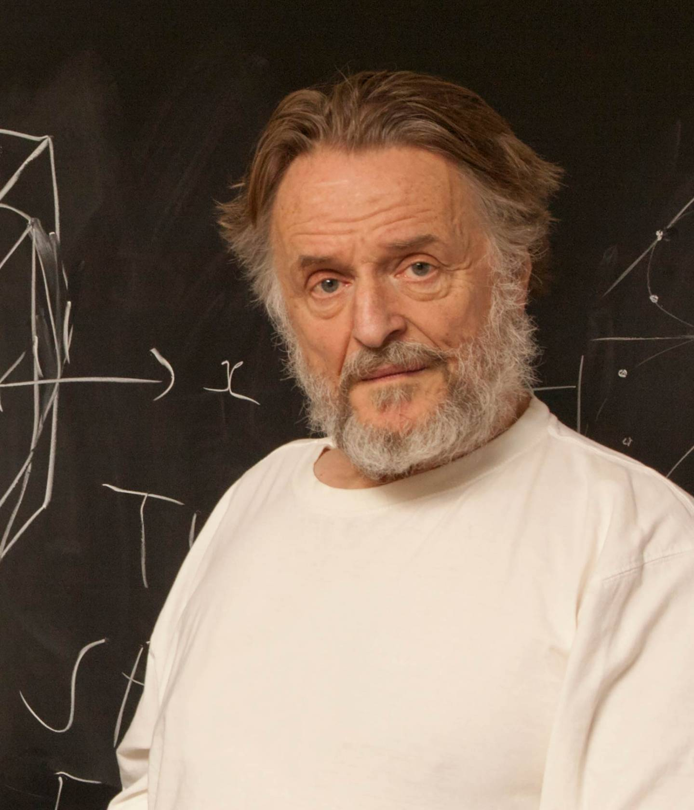

A História de John Conway
John Horton Conway, nascido em 26 de dezembro de 1937, em Liverpool, Inglaterra, foi um matemático britânico cujas contribuições inovadoras deixaram um legado profundo e duradouro em várias áreas da matemática e da ciência da computação. Conhecido por seu trabalho em teoria dos jogos, teoria dos grupos, geometria, teoria dos números e topologia, Conway era uma figura carismática e uma mente brilhante que encantava colegas e estudantes com sua paixão pela matemática.
Primeiros Anos e Educação
Conway demonstrou uma aptidão precoce para a matemática. Aos 11 anos, já lia textos avançados sobre o assunto. Ele ingressou no Gonville and Caius College, em Cambridge, onde estudou sob a orientação de Harold Davenport, um matemático renomado. Sua tese de doutorado, concluída em 1964, focou na teoria dos números.
Contribuições Matemáticas
O Jogo da Vida
Uma das contribuições mais famosas de Conway é o "Jogo da Vida" (ou "Game of Life"), um autômato celular que ele desenvolveu em 1970. Este jogo não é um jogo no sentido tradicional, mas sim um sistema dinâmico discreto que simula a evolução de células em uma grade bidimensional. As células podem estar "vivas" ou "mortas" e evoluem de acordo com regras simples, que produzem um comportamento complexo e muitas vezes imprevisível. O Jogo da Vida inspirou pesquisas em sistemas complexos e teoria do caos, além de influenciar áreas como biologia, física e ciência da computação.
Grupos de Conway e Monstro
Conway também fez contribuições significativas à teoria dos grupos, especialmente com a descoberta dos Grupos de Conway. Estes grupos estão relacionados ao Monstro, um dos maiores e mais complexos grupos esporádicos. Seu trabalho ajudou a mapear a "Atlas of Finite Groups," uma referência crucial para matemáticos.
Ensino e Legado
Conway era conhecido não apenas por suas descobertas matemáticas, mas também por seu estilo de ensino cativante. Ele ensinou na Universidade de Cambridge e, mais tarde, na Universidade de Princeton, onde influenciou gerações de matemáticos.
Prêmios e Reconhecimentos
Ao longo de sua carreira, Conway recebeu inúmeros prêmios e reconhecimentos, incluindo a Medalha Berwick, a Medalha Polya e o Prêmio Nemmers em Matemática. Ele foi eleito membro da Royal Society em 1981, um reconhecimento de sua contribuição excepcional à matemática.
Vida Pessoal e Morte
John Conway era um personagem excêntrico e carismático, conhecido por sua personalidade vibrante e suas habilidades em truques de cartas e problemas de lógica. Ele faleceu em 11 de abril de 2020, devido a complicações da COVID-19. Sua morte foi uma grande perda para a comunidade matemática, mas seu legado continua vivo através de suas inúmeras contribuições e do impacto duradouro que teve em seus alunos e colegas.
 Simplicidade e Complexidade
Regras Básicas
O Jogo da Vida é um autômato celular que opera em uma grade bidimensional de células. Cada célula pode estar em um de dois estados: viva ou morta. A evolução do jogo segue quatro regras simples:
- Uma célula viva com menos de dois vizinhos vivos morre de solidão.
- Uma célula viva com dois ou três vizinhos vivos continua viva.
- Uma célula viva com mais de três vizinhos vivos morre de superpopulação.
- Uma célula morta com exatamente três vizinhos vivos se torna viva por reprodução.
Apesar de sua simplicidade, essas regras geram um comportamento incrivelmente complexo e muitas vezes imprevisível, resultando em padrões que podem crescer, mudar de forma ou desaparecer.
Emergência e Complexidade
Padrões Interessantes
A simplicidade das regras do Jogo da Vida leva à emergência de padrões complexos. Alguns dos padrões mais notáveis incluem:
- Blocos e Blinques: Formas estáveis que permanecem inalteradas de geração em geração.
- Osiladores: Padrões que retornam ao seu estado inicial após um número fixo de gerações.
- Naves: Padrões que se movem pelo espaço da grade ao longo do tempo.
- Gliders: Pequenas formas móveis que se deslocam diagonalmente pela grade e são usadas para transmitir informação.
Esses padrões mostram como sistemas simples podem gerar comportamentos extremamente complexos e diversificados, ilustrando o conceito de emergência em sistemas dinâmicos.
Aplicações e Implicações
Modelagem de Sistemas Complexos
O Jogo da Vida tem aplicações em diversas áreas, incluindo:
- Biologia: Para modelar o crescimento de populações e a interação entre organismos.
- Física: Em estudos de sistemas dinâmicos e teoria do caos.
- Computação: Como exemplo de computação baseada em regras simples e como base para estudos em teoria da computação e autômatos celulares.
- Arte e Design: Inspirando artistas e designers na criação de padrões visuais e sonoros.
Computação Universal
Um dos aspectos mais surpreendentes do Jogo da Vida é que ele é Turing-completo. Isso significa que, com a configuração correta de células iniciais, ele pode simular qualquer algoritmo de um computador universal. Essa descoberta foi revolucionária, mostrando que um sistema com regras simples pode, teoricamente, realizar qualquer cálculo computacional.
Fascínio e Comunidade
Exploração e Descobertas
Desde sua criação, o Jogo da Vida capturou a imaginação de matemáticos, cientistas e entusiastas. Comunidades inteiras se formaram em torno da exploração de novos padrões, regras alternativas e variações do jogo. Esse interesse contínuo levou à criação de softwares e plataformas onde as pessoas podem experimentar com o Jogo da Vida e compartilhar suas descobertas.
Educação e Popularização
O Jogo da Vida também é uma ferramenta educacional poderosa. Ele ilustra conceitos matemáticos e científicos de forma visual e intuitiva, tornando-os acessíveis a estudantes e curiosos. Sua popularidade ajudou a divulgar a matemática e a ciência da computação a um público mais amplo.